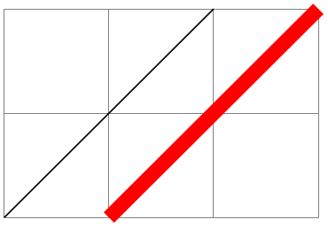

The TikZ and PGF Packages
Manual for version 3.1.9a
Libraries
55 Fixed Point Arithmetic Library
TikZ Library fixedpointarithmetic ¶
\usepgflibrary{fixedpointarithmetic} %
LaTeX
and plain
TeX
and pure pgf
\usepgflibrary[fixedpointarithmetic] % ConTeXt and pure pgf
\usetikzlibrary{fixedpointarithmetic} %
LaTeX
and plain
TeX
when using TikZ
\usetikzlibrary[fixedpointarithmetic] % ConTeXt when using TikZ
This library provides an interface to the
LaTeX
package fp for fixed point arithmetic.
In addition to loading this library you must ensure
fp is loaded, otherwise errors will
occur.
55.1 Overview¶
Whilst the mathematical engine that comes with pgf is reasonably fast and flexible when it comes to parsing, the accuracy tends to be fairly low, particularly for expressions involving many operations chained together. In addition the range of values that can be computed is very small: \(\pm 16383.99999\). Conversely, the fp package has a reasonably high accuracy, and can perform computations over a wide range of values (approximately \(\pm 9.999\times 10^{17}\)), but is comparatively slow and not very flexible, particularly regarding parsing.
This library enables the combination of the two: the flexible parser of the pgf mathematical engine with the evaluation accuracy of fp. There are, however, a number of important points to bear in mind:
-
• Whilst fp supports very large numbers, pgf and TikZ do not. It is possible to calculate the result of 2^20 or 1.2e10+3.4e10, but it is not possible to use these results in pictures directly without some “extra work”.
-
• The pgf mathematical engine will still be used to evaluate lengths, such as 10pt or 3em, so it is not possible for an length to exceed the range of values supported by TeX-dimensions (\(\pm 16383.99999\)pt), even though the resulting expression is within the range of fp. So, for example, one can calculate 3cm*10000, but not 3*10000cm.
-
• Not all of the functions listed in Section 93, have been mapped onto fp equivalents. Of those that have been, it is not guaranteed that functions will perform in the same way as they do in pgf. Reference should be made to the documentation for fp.
-
• In pgf, trigonometric functions such as sin and cos assume arguments are in degrees, and functions such as asin and acos return results in degrees. Although fp uses radians for such functions, pgf automatically converts arguments from degrees to radians, and converts results from radians to degrees, to ensure everything “works properly”.
-
• The overall speed will actually be slower than using pgf mathematical engine. The calculating power of fp comes at the cost of an increased processing time.
55.2 Using Fixed Point Arithmetic in PGF and TikZ¶
The following key is provided to use fp in pgf and TikZ:
/pgf/fixed point arithmetic=⟨options⟩(no default) ¶
alias /tikz/fixed point arithmetic
This key will set the key path to /pgf/fixed point, and execute ⟨options⟩. Then it will install the necessary commands so that the pgf parser will use fp to perform calculations. The best way to use this key is as an argument to a scope or picture. This means that fp does not always have to be used, and pgf can use its own mathematical engine at other times, which can lead to a significant reduction in the time for a document to compile.
Currently there are only a few keys key supported for ⟨options⟩:
/pgf/fixed point/scale results=⟨factor⟩(no default) ¶
As noted above, fp can process a far greater range of numbers than pgf and TikZ. In order to use results from fp in a {pgfpicture} or a {tikzpicture} they need to be scaled. When this key is used pgf will scale results of any evaluation by ⟨factor⟩. However, as it is not desirable for every part of every expression to be scaled, scaling will only take place if a special prefix * is used. If * is used at the beginning of an expression the evaluation of the expression will evaluated and then multiplied by ⟨factor⟩.

\usepgflibrary {fixedpointarithmetic}
\begin{tikzpicture}[fixed point arithmetic={scale
results=10^-6}]
\draw [help lines] grid
(3,2);
\draw (0,0) --
(2,2);
\draw [red, line width=4pt] (*1.0e6,0) --
(*3.0e6,*2.0e6);
\end{tikzpicture}
A special case of scaling involves plots of data containing large numbers from files. It is possible to “pre-process” a file, typically using the application that generates the data, to either precede the relevant column with * or to perform the scaling as part of the calculation process. However, it may be desirable for the data in a plot to appear in a table as well, so, two files would be required, one pre-processed for plotting, and one not. This extra work may be undesirable so the following keys are provided:
/pgf/fixed point/scale file plot x=⟨factor⟩(no default) ¶
This key will scale the first column of data read from a file before it is plotted. It is independent of the scale results key.
/pgf/fixed point/scale file plot y=⟨factor⟩(no default) ¶
This key will scale the second column of data read from a file before it is plotted.
/pgf/fixed point/scale file plot z=⟨factor⟩(no default) ¶
This key will scale the third column of data read from a file before it is plotted.